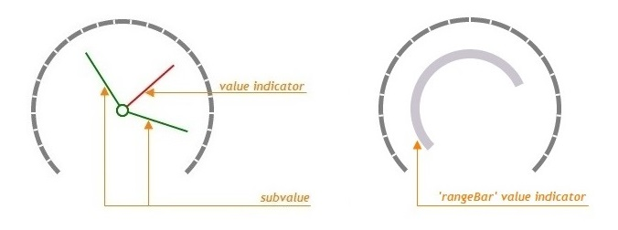
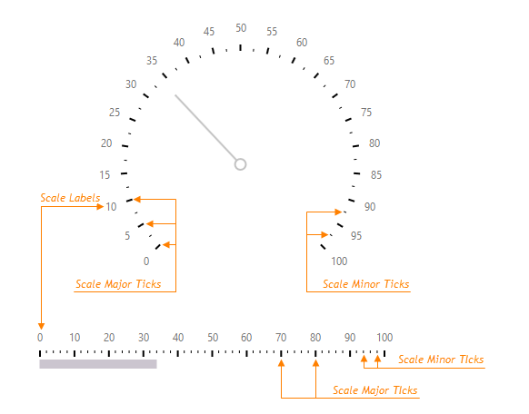
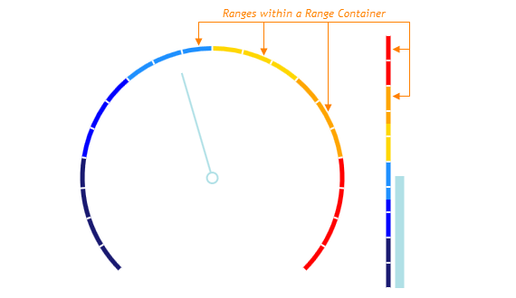
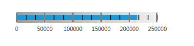
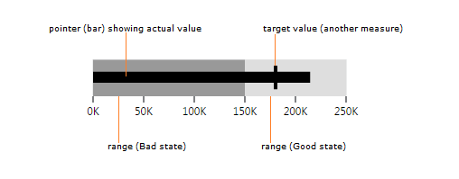
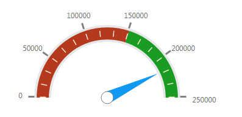
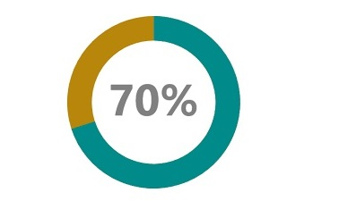
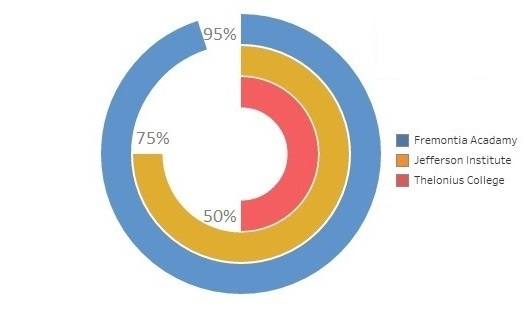

1. What is a Gauge?
Gauge is a data visualization technique that uses needles to show information as a reading on a linear scale or a dial. The design of these charts is inspired by the fuel gauge of a car, which is where its name comes from. Conventional radial gauge charts are often also refered to as dial charts or speedometer charts.
Gauge charts are typically used to represent single-valued metrics, such as the total revenue for the year-to-date.They are also useful for comparing values between a small number of variables either by using multiple needles on the same gauge or by using multiple gauges.
2. Elements of a Gauge chart
Gauge charts typically use the following elements to represent data effectively;
2.1. Value and Subvalue Indicators:
A value indicator is a pointer that designates the main value on a gauge. Pointers that indicate extra values on a gauge are called subvalue indicators. In the example mentioned above, a value indicator would identify the revenue of a company at present, while subvalue indicators would point at its revenue during other months of the year. Instead of traditional pointers, range bars can also be used as value and subvalue indicators.
2.2. Scale Ticks and Labels:
Values and subvalues are indicated on a gauge scale that is divided by scale ticks. These ticks can be major or minor. Major scale ticks can be accompanied by labels that display scale values. Scale labels are designed to make data represented by a gauge more comprehensible.
2.3. Range Container:
For the purpose of more intelligible data visualization, scale values can be combined into ranges, each of which can be colored differently. For example, you can indicate the ranges of warm and cold temperatures.
3. Types of Gauge charts
There are mutiple variations of gauge charts, most commom ones are as follows;
3.1. Linear Gauge:
A linear gauge is characterized by a linear scale which can be horizontal or vertical in orientation.
3.2. Bullet Gauge:
A bullet grauge is a variation on a linear gauge that displays an actual value and a target value. It may also show ranges that identify whether the actual or current value is good or bad. Bullet graphs convey meaningful information in a compact space, making them ideal for dashboards that need to display a number of single-valued metrics, such as the current year-to-date sales revenue.
3.3. Angular or Radial Gauge:
An angular gauge, essentially like the speedometer, has a radial scale and a pivot point around which its pointers rotate. By default, the radial scale forms a complete 360-degree circle but it can also be displayed as an arc.
An angular gauge can also have more than one value indicator. For example, the gauge below uses multiple, color coded, value indicators to show the human popultaion of 5 different geographical regions.

3.4. Pie Gauge:
A pie gauge is a variation on a radial gauge that displays a metric as a percentage of the length of a circular scale, like a pie or donut chart with a single slice.
A pie gauge can also be used to present values of an attribute, as percentages, for multiple actors. For example, Gauge below compares the performance rate of three academic institutions.
4. Pros and Cons of using a Gauge
The greatest advantage of a gauge is that it is easy to read and understand and gives an instant indication of the performance within an area. But gauge charts can only be used to visualize a single variable, hence their applicability is fairly limited. Moreover, for a single-value metric, a gauge is very space-consuming.